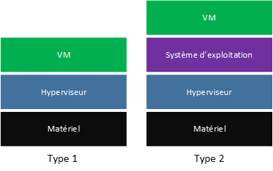

Définition de la Virtualisation
La virtualisation est une technologie qui permet de créer une version virtuelle d'une ressource physique, comme un serveur, un poste de travail, un système d'exploitation, un stockage ou un réseau. Elle offre la possibilité d’exécuter plusieurs systèmes d’exploitation ou applications sur une seule machine physique, optimisant ainsi l’utilisation des ressources.

Différence entre Émulateur, Simulateur et Outil de Virtualisation
- Émulateur : Reproduit entièrement le comportement d'un autre système (matériel et logiciel). Il est souvent utilisé pour exécuter des logiciels conçus pour des architectures différentes.
- Simulateur : Imitation d’un système pour tester ou prédire son comportement. Contrairement à l'émulateur, il ne reproduit pas toutes les fonctionnalités.
- Outil de Virtualisation : Permet d'exécuter plusieurs systèmes d'exploitation sur une machine physique en partageant ses ressources. Contrairement à un émulateur, il repose sur l'architecture matérielle existante.

Types de Virtualisation pour VirtualBox, VMware Workstation et Stratus
- VirtualBox : Virtualisation de type 2 (hyperviseur hébergé), fonctionnant au-dessus d’un système d’exploitation hôte.
- VMware Workstation : Virtualisation de type 2, également basée sur un système d’exploitation hôte. Il est conçu pour les développeurs et testeurs.
- Stratus : Virtualisation de type 1 (hyperviseur natif), utilisé dans des environnements critiques pour la haute disponibilité et la tolérance aux pannes.